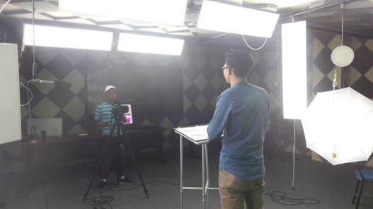
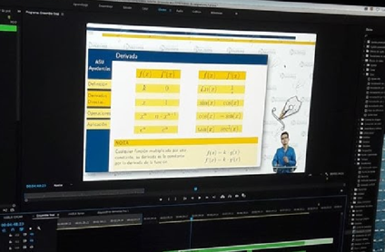

Certificado de competencia
Certificado Adicional al título de grado
El cetificado de comptecia te da un plus en tu vida profecional
El cetificado de comptecia te da un plus en tu vida profecional
Los cetificados de competencia se dan al momentos de graduarse
Extensiones universitarias Labor comunitaria (120-160 h)
Uno de las pasantias son los videos que se realizan dentro de las instalaciones de la universidad con el afan de ayudar a los estudiantes mediante videos tutoriasles o audios
 